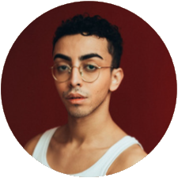

La WEBFAMILY
Découvrez notre équipe de développeurs passionnés,
prêts à relever tous les défis technologiques et à transformer vos idées en réalité numérique.
Nous sommes la WEBFAMILY et nous sommes heureux de vous présenter notre équipe. Notre équipe a été créé en 2022 et depuis, nous travaillons avec enthousiasme pour offrir une expérience hors du
commun pour les utilisateurs.
Notre équipe est constituée de spécialistes passionnés, y compris des développeurs web, d'un graphiste et d'un documentaliste. L'esprit d'équipe et la communication sont essentielles pour réussir, et nous travaillons ensemble pour créer un site internet à la pointe de l'innovation et de la créativité.
Nous sommes fiers de notre équipe et de ce que nous avons accompli ensemble jusqu'à présent. Nous sommes continuellement en train d'évoluer afin de répondre aux besoins de nos utilisateurs. Nous sommes impatients de poursuivre notre coopération avec vous et de relever de nouveaux défis ensemble.
-

Maksen GHROUS
Chef de Projet
En tant que chef de projet, il planifie, exécute et livre avec succès des projets en coordonnant les membres de l'équipe, supervisant les étapes et atteignant les objectifs dans les délais impartis. En tant que leader motivé, il résout les problèmes de manière créative et prend des décisions opportunes pour assurer le succès du projet, avec pour objectif principal de coordonner toutes les activités de l'événement culturel et une maîtrise courante de l'anglais pour faciliter la communication internationale.
-

Arnaud AUBLET
Développeur Web
En tant que développeur web, il est passionné par la création de sites internet qui offrent une expérience incroyable aux utilisateurs. Il est constamment à la recherche de nouvelles technologies et de nouvelles techniques pour améliorer ses compétences en codage et pour répondre aux besoins de ses clients. Son objectif est de créer des sites internet dynamiques, conviviaux et performants pour offrir une expérience exceptionnelle à tous les utilisateurs.
-

Killian BRULE
Graphiste
En tant que graphiste, son travail consiste à utiliser des logiciels de conception pour créer des visuels. Il est attentif aux détails et il a une bonne connaissance des principes de conception, de la typographie, de la couleur et de la mise en page, ce qui est très utilise pour la mise en plan su site internet.
-

Loic LI
Développeur Web
Le développeur web en question travaille dans une petite équipe de développement web. Il est compétent dans plusieurs langages de programmation tels que HTML, CSS, JavaScript, PHP et SQL et est capable de créer des sites web dynamiques et des applications web interactives.
-

Ravichandran ARUMUGADAS
Développeur Web
En tant que développeur web, il a pour passion la conception de sites web et d'applications en ligne. Il est expert dans les langages de programmation tels que HTML, CSS, JavaScript et PHP. Son objectif est de créer des sites web qui offrent une expérience exceptionnelle aux utilisateurs, tout en veillant à ce qu'ils soient accessibles pour tous les utilisateurs. Il est constamment à l'affût des dernières tendances et technologies pour améliorer ses compétences en développement web et offrir le meilleur service possible. Il peut communiquer en anglais facilement, ce qui est un atout fort.
 Anglais
Anglais